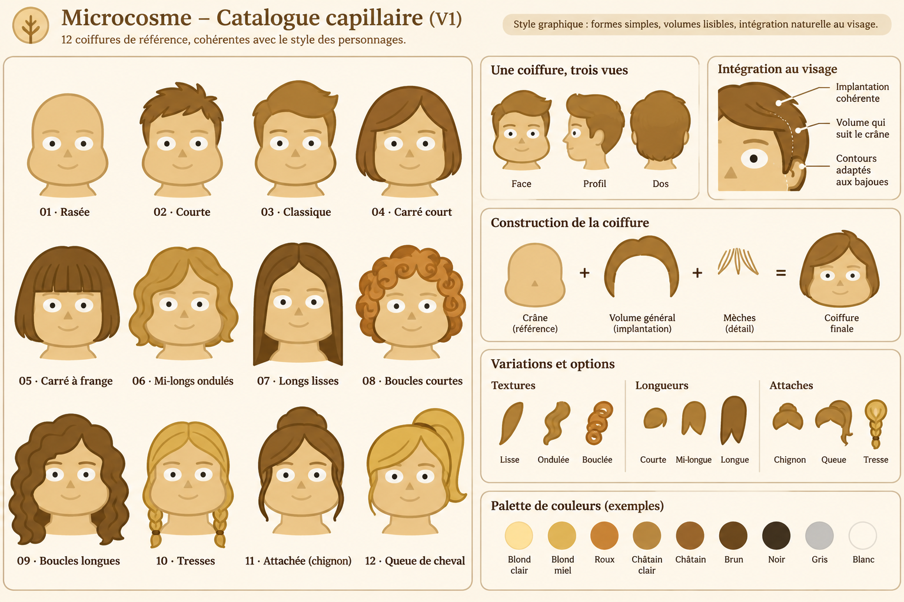

ADAPTATION MORPHOLOGIQUE CONTINUE
Le visage change. La coupe demeure.
Faites évoluer le crâne et le visage, séparément ou ensemble.
SUR VOTRE IPAD
Le même état aux trois tailles · aucun étirement global de la coiffure
Turquoise : morphologie · ocre : attaches et passages des mèches
03 / POINTS DE DÉPART
Trois préréglages, des variations libres
La coupe choisie est conservée.
04 / COMPARAISON
Une même coupe accompagne les proportions.
Neutre et deux transformations combinées.
Consulter le catalogue capillaire original V1
Classique courte : modèle 03 · Carré court : modèle 04 · Boucles courtes : modèle 08.
Ouvrir la référence en grand ↗
Audit visuel : minimums, maximums et combinaisons
Captures comparatives WebKit, valeurs neutres et extrêmes des huit curseurs pour chaque coupe. Ces captures facilitent la revue ; elles ne valent pas validation artistique.
Impossible de charger l’atelier. Rechargez la page.